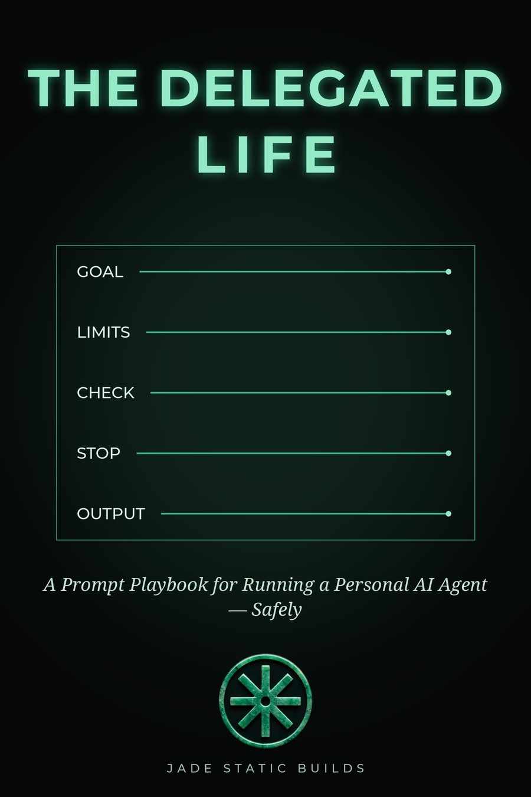

THE DELEGATED LIFE
The workspace layer of the book: build your Delegation Contract, keep your playbook, track your systems, and hand the Agent Pack to your own agent.
No accounts, no tracking. Your code unlocks Pro on this device, and everything you build stays in this browser — export it any time. License keys activate at launch; this build runs on beta codes.
JADE STATIC BUILDS · BETA BUILD 0.9
Free generates a brief. Pro runs the system. Everything here is saved only on this device.
Assemble the Agent Pack with your playbook inside it — your asks, rules, and contracts — and hand it to your own AI agent so it can coach you through the book.
Chapter 1 gives you the Pattern. Chapter 4 gives you the Contract — the builder here is that chapter with its sleeves rolled up. The 7-Day Plan in Chapter 8 is the tracker in the Plan tab. Nothing here replaces the book; it's the book's instruments, working.
All eleven templates from the book, as fill-in forms. Fill, copy, save.
Chapter 4, as a tool. One contract per area you hand over. Write it in your own words.
Starter defaults are pre-filled below — edit or delete any line. They are a starting point, not a complete list: add the never-lines this area needs.
How much of your time this system may cost you each week — reports, approvals, fixes, all of it. Your number, in your words. Blank is fine.
Your contracts, your standing rules, your asks — in your words. Stored on this device only.
The book's starter set is below — keep, edit, or replace with your own. Rules in your own words are rules you'll keep.
Run the interview in Tools to add asks the guided way.
Your playbook is yours. Export it as JSON to back it up or move it; import restores it.
Chapter 8's plan, one day at a time. Check a day off when it's honestly done.
Promotions are earned: three good runs at the current stage. (Chapter 8.)

A Prompt Playbook for Running a Personal AI Agent — Safely
One ask at a time. Sorting rules from the book: searching and comparing run alone, the transaction needs approval; drafting runs alone, sending needs approval; anything irreversible without your yes is never.
For a prompt that disappointed you. (Chapters 1 and 7.) Your verdict uses the book's gate vocabulary (Chapter 6): Approve, Approve with fixes, Send back.
Run before promoting anything to Tier 3 or 4. Every box, or it doesn't ship. A promotion needs a verdict of Approve (Chapter 6): Approve, Approve with fixes, or Send back.